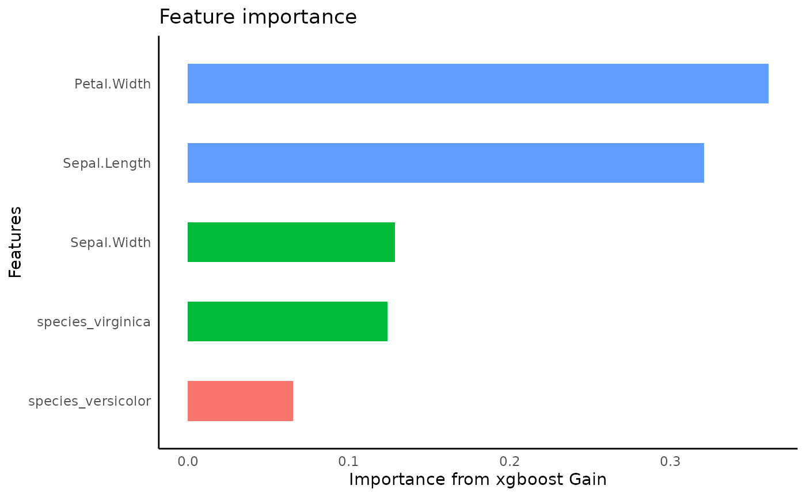
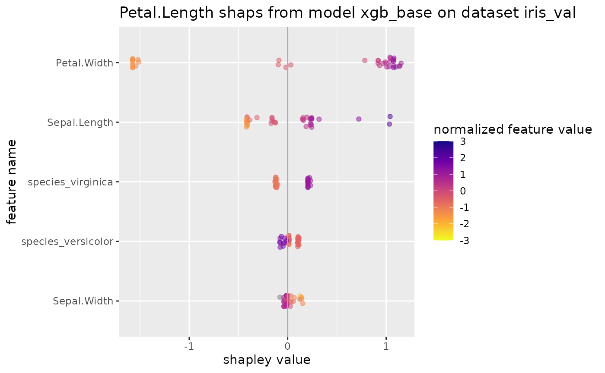

library(autostats)
library(workflows)
library(dplyr)
library(tune)
library(rsample)
library(hardhat)autostats provides convenient wrappers for modeling,
visualizing, and predicting using a tidy workflow. The emphasis is on
rapid iteration and quick results using an intuitive interface based off
the tibble and tidy_formula.
Prepare data
Set up the iris data set for modeling. Create dummies and any new columns before making the formula. This way the same formula can be use throughout the modeling and prediction process.
set.seed(34)
iris %>%
dplyr::as_tibble() %>%
framecleaner::create_dummies(remove_first_dummy = TRUE) -> iris1
#> 1 column(s) have become 2 dummy columns
iris1 %>%
tidy_formula(target = Petal.Length) -> petal_form
petal_form
#> Petal.Length ~ Sepal.Length + Sepal.Width + Petal.Width + Species_versicolor +
#> Species_virginica
#> <environment: 0x55b3bd363cc0>Use the rsample package to split into train and validation sets.
iris1 %>%
rsample::initial_split() -> iris_split
iris_split %>%
rsample::analysis() -> iris_train
iris_split %>%
rsample::assessment() -> iris_val
iris_split
#> <Training/Testing/Total>
#> <112/38/150>Fit boosting models and visualize
Fit models to the training set using the formula to predict
Petal.Length. Variable importance using gain for each
xgboost model can be visualized.
xgboost with bayesian hyperparameter optimization
auto_tune_xgboost returns a workflow object with tuned
parameters and requires some postprocessing to get a traind
xgb.Booster object like tidy_xgboost. Tuning
iterations set to 1 just so the vignette builds quickly.
Default is n_iter = 100
iris_train %>%
auto_tune_xgboost(formula = petal_form, n_iter = 7L, tune_method = "bayes") -> xgb_tuned_bayes
xgb_tuned_bayes %>%
parsnip::fit(iris_train) %>%
hardhat::extract_fit_engine() -> xgb_tuned_fit_bayes
xgb_tuned_fit_bayes %>%
visualize_model()xgboost with grid search hyperparameter optimization
xgboost also can be tuned using a grid that is created
internally using dials::grid_max_entropy. The
n_iter parameter is passed to grid_size.
Parallelization is highly effective in this method, so the default
argument parallel = TRUE is recommended.
iris_train %>%
auto_tune_xgboost(formula = petal_form, n_iter = 5L,trees = 20L, loss_reduction = 2, mtry = .5, tune_method = "grid", parallel = FALSE) -> xgb_tuned_grid
xgb_tuned_grid %>%
parsnip::fit(iris_train) %>%
parsnip::extract_fit_engine() -> xgb_tuned_fit_grid
xgb_tuned_fit_grid %>%
visualize_model()xgboost with default parameters
iris_train %>%
tidy_xgboost(formula = petal_form) -> xgb_base
#> accuracy tested on a validation set
#> # A tibble: 3 × 2
#> .metric .estimate
#> <chr> <dbl>
#> 1 ccc 0.975
#> 2 rmse 0.375
#> 3 rsq 0.953
xgboost with hand-picked parameters
iris_train %>%
tidy_xgboost(petal_form,
trees = 250L,
tree_depth = 3L,
sample_size = .5,
mtry = .5,
min_n = 2) -> xgb_opt
#> accuracy tested on a validation set
#> # A tibble: 3 × 2
#> .metric .estimate
#> <chr> <dbl>
#> 1 ccc 0.979
#> 2 rmse 0.347
#> 3 rsq 0.964
predict on validation set
make predictions
Predictions are iteratively added to the validation data frame. The name of the column is automatically created using the models name and the prediction target.
xgb_base %>%
tidy_predict(newdata = iris_val, form = petal_form) -> iris_val2
#> created the following column: Petal.Length_preds_Table
xgb_opt %>%
tidy_predict(newdata = iris_val2, petal_form) -> iris_val3
#> created the following column: Petal.Length_preds_Table
iris_val3 %>%
names()
#> [1] "Sepal.Length" "Sepal.Width"
#> [3] "Petal.Length" "Petal.Width"
#> [5] "Species_versicolor" "Species_virginica"
#> [7] "Petal.Length_preds_Table"predictions with eval_preds
Instead of evaluationg these prediction 1 by 1, This step is
automated with eval_preds. This function is specifically
designed to evaluate predicted columns with names given from
tidy_predict.
iris_val3 %>%
eval_preds()
#> # A tibble: 3 × 5
#> .metric .estimator .estimate model target
#> <chr> <chr> <dbl> <chr> <chr>
#> 1 ccc standard 0.984 Table Petal.Length
#> 2 rmse standard 0.312 Table Petal.Length
#> 3 rsq standard 0.972 Table Petal.Lengthget shapley values
tidy_shap has similar syntax to
tidy_predict and can be used to get shapley values from
xgboost models on a validation set.
shap_list$shap_tbl
#> # A tibble: 38 × 5
#> Sepal.Length Sepal.Width Petal.Width Species_versicolor Species_virginica
#> <dbl> <dbl> <dbl> <dbl> <dbl>
#> 1 -0.236 -0.0700 -1.97 0.0970 0.000452
#> 2 -0.284 -0.0764 -2.02 0.0954 0.000395
#> 3 -0.118 -0.0969 -2.04 0.0970 0.00137
#> 4 -0.244 -0.0778 -1.99 0.0970 0.000452
#> 5 -0.143 -0.0595 -2.08 0.0970 0.000452
#> 6 -0.281 -0.0627 -2.01 0.0970 0.000845
#> 7 -0.228 -0.0395 -1.90 0.0970 0.000856
#> 8 -0.260 -0.145 -2.04 0.0954 0.000351
#> 9 -0.223 -0.0909 -1.99 0.0954 0.000395
#> 10 -0.281 0.272 -1.86 0.0960 -0.00104
#> # … with 28 more rows
shap_list$shap_summary
#> # A tibble: 5 × 5
#> name cor var sum sum_abs
#> <chr> <dbl> <dbl> <dbl> <dbl>
#> 1 Petal.Width 0.955 2.29 8.43 53.7
#> 2 Sepal.Length 0.809 0.0875 -2.27 7.82
#> 3 Species_versicolor -0.934 0.0333 3.33 7.20
#> 4 Sepal.Width -0.696 0.0148 0.310 3.25
#> 5 Species_virginica -0.326 0.0000230 -0.0427 0.107
shap_list$swarmplot
shap_list$scatterplotsunderstand xgboost with other functions from the original package
Overfittingin the base config may be related to growing deep trees.
xgb_base %>%
xgboost::xgb.plot.deepness()
xgb_base %>%
xgboost::xgb.plot.deepness()Plot the first tree in the model. The small in terminal leaves suggests overfitting in the base model.
xgb_base %>%
xgboost::xgb.plot.tree(model = ., trees = 1)